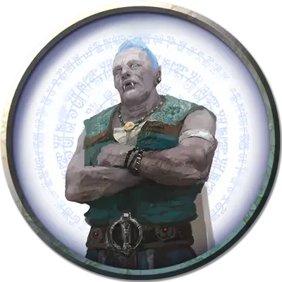

Граф Туллен
Count Thullen
Огромный Великан, нейтрально-добрый, именной НИП

Класс Доспеха 14 (16 с дубовой кожей)
Хиты 200 (16к12 + 96)
Скорость 40 футов
| мод | спас | ||
|---|---|---|---|
| СИЛ | 27 | +8 | +8 |
| ЛОВ | 10 | +0 | +0 |
| ТЕЛ | 22 | +6 | +10 |
| мод | спас | ||
|---|---|---|---|
| ИНТ | 18 | +4 | +4 |
| МДР | 16 | +3 | +7 |
| ХАР | 16 | +3 | +7 |
Навыки Восприятие +7, Проницательность +7
Чувства пассивное Восприятие 17
Языки Общий, Великаний, Друидический
Опасность 10 (5900 опыта)
Бонус мастерства +4
Среда обитания Горы
Особенности
Тонкий нюх. Великан совершает с преимуществом проверки Мудрости (Восприятие), полагающиеся на обоняние.
Врождённое колдовство. Базовой характеристикой великана является Харизма (Сл спасброска от заклинания 15; +7 к попаданию атаками заклинаниями). Он может накладывать следующие заклинания, не нуждаясь в материальных компонентах:
• Неограниченно: обнаружение магии [detect magic], свет [light], туманное облако [fog cloud];
• 3/день каждое: падение пёрышком [feather fall], полёт [fly], телекинез [telekinesis], туманный шаг [misty step];
• 1/день каждое: власть над погодой [control weather], газообразная форма [gaseous form].
Использование заклинаний. Туллен — заклинатель 9-го уровня. Его базовой характеристикой является Мудрость (Сл спасброска от заклинания 15; +7 к попаданию атаками заклинаниями). У него подготовлены следующие подготовленные заклинания друида:
• Заговоры (Неограниченно): искусство друидов [druidcraft], починка [mending], сотворение пламени [produce flame];
• 1 уровень (4 ячейки): лечение ран [cure wounds], опутывание [entangle], волна грома [thunderwave];
• 2 уровень (3 ячейки): почтовое животное [animal messenger], дубовая кора [barkskin], порыв ветра [gust of wind];
• 3 уровень (3 ячейки): призыв молнии [call lightning], призыв животных [conjure animals], разговор с растениями [speak with plants];
• 4 уровень (3 ячейки): свобода перемещения [freedom of movement], цепкая лоза [grasping vine];
• 5 уровень (1 ячейка): призыв элементаля [conjure elemental].
Новые опции для великанов. Некоторые взрослые облачные великаны имеют магическую способность создавать барьеры штормового ветра вокруг себя и отражать летящие снаряды.
Другим нравится подбрасывать своих врагов прямо в воздух. Данные способности представлены в виде следующих вариантных действий: (Storm King's Thunder)
Бросок. Великан пытается швырнуть существо, Маленького или Среднего размера, находящееся не дальше 10 футов от него. Существо должно пройти спасбросок Ловкости Сл 20 или быть брошенным на 60 футов горизонтально в направлении по выбору великана и упасть ничком, получив 1к8 дробящего урона за каждые 10 футов полёта.
Аура ветра. Магическая аура ветра окружает великана. Аура представляет собой сферу радиусом 10 футов и сохраняется, пока великан держит концентрацию на ней (также как на заклинании). Пока аура действует, великан получает +2 к КД против дальнобойных атак оружием, а также гасит весь немагический огонь в радиусе этой сферы.
Действия
Мультиатака. Великан совершает две атаки моргенштерном.
Моргенштерн. Рукопашная атака оружием: +12 к попаданию, досягаемость 10 футов, одна цель. Попадание: Колющий урон 21 (3к8 + 8).
Камень. Дальнобойная атака оружием: +12 к попаданию, дистанция 60/240 футов, одна цель. Попадание: Дробящий урон 30 (4к10 + 8).
Описание
Облачные великаны живут расточительной жизнью высоко над землей, нисколько не заботясь об участи других рас кроме как ради развлечения. Они мускулистые, кожа у них светлая, а волосы серебряного или голубого цвета.
Великие и могучие. Облачные великаны путешествуют вместе с ветрами, и могут оказаться в любом месте мира. В трудные времена разрозненные семейства облачных великанов объединяются в единый клан. Впрочем, у них не всегда получается сделать это быстро.
Будучи настроенными на магическую энергетику своих воздушных просторов, облачные великаны могут создавать завесы густых туманов и сами могут превращаться в туман. Они обитают в замках на пиках высоких гор или на прочных облаках, где находятся их владения. Время от времени эти магические облака все ещё проносятся по небесам, напоминая о потерянных империях великанов.
Облачные великаны — лучшие заклинатели среди всех великанов; они могут контролировать погоду, вызывать шторм и управлять ветром почти так же хорошо, как родственные им штормовые великаны.
Влиятельные правители. Несмотря на то, что облачные великаны ниже по рангу, чем штормовые, ведя уединенный образ жизни, штормовые великаны редко вступают в контакт с остальными представителями своего рода. Поэтому многие облачные великаны считают себя обладателями самого высокого статуса и могущества среди других представителей своего вида. Они приказывают стоящим ниже великанам искать для них богатства и предметы искусства, нанимают огненных великанов в качестве кузнецов и ремесленников, и используя ледяных великанов как разбойников, мародеров и грабителей. Глуповатые холмовые великаны служат им громилами и пушечным мясом — иногда они сражаются ради развлечения облачных великанов. Облачный великан может приказать холмовым или ледяным великанам присвоить земли гуманоидов, которые они считают справедливой платой за долгое милосердие.
На вершинах гор и массивных облаков облачные великаны разводят необыкновенные сады. Там растет виноград величиной с яблоко, яблоки размером с тыкву, и тыквы размером с телегу. С этих рассеянных по миру семян и пошли сказания об овощах размером с дом и волшебных бобах.
Человеческая знать разводит охотничьих соколов, а облачные великаны для этих же целей содержат грифонов, перитонов и виверн. Подобные создания часто охраняют сады облачных великанов наравне с натренированными хищниками, такими как совомеды и львы.
Дети Трикстера. Покровительствующее божество и отец облачных великанов — Мемнор Трикстер, умнейший и коварнейший из всех божеств великанов. Облачные великаны ориентируются на деяния Мемнора и равняются на него. Злые великаны при этом подражают его двуличности и своенравности, а добрые любят его за интеллект и красноречие. Члены одной семьи, как правило, следуют одним курсом.
Богатство и власть. Облачные великаны заслуживают свое место в орднунге собранными сокровищами, носимым богатством и подарками, даруемыми другим облачным великанам. Однако, стоимость — лишь одна сторона медали. Роскошь на самом великане и окружение его дома также должны быть дивными и прекрасными. Мешки золота или самоцветов ценятся облачными великанами меньше, чем украшения, сделанные из этих материалов. Создание сокровищ, приносящих уважение, является частью домашнего хозяйства великана.
Облачные великаны предпочитают не красть и не драться за сокровища друг с другом, а ставить их на кон в азартных играх, любя высокие риски и соответствующую награду. Они часто спорят насчет событий, которые не зависят от них самих, например, о жизни малых существ. Положение в орднунге и баснословные суммы можно выиграть или проиграть в споре о военных успехах гуманоидных наций. Вмешательство в конфликт влечет за собой потерю ставки, но такой обман считается жульничеством только если будет обнаружен. В противном случае это ум, чествующий Мемнора.
См. дополнительно статью: "Бестиарий: Великаны"